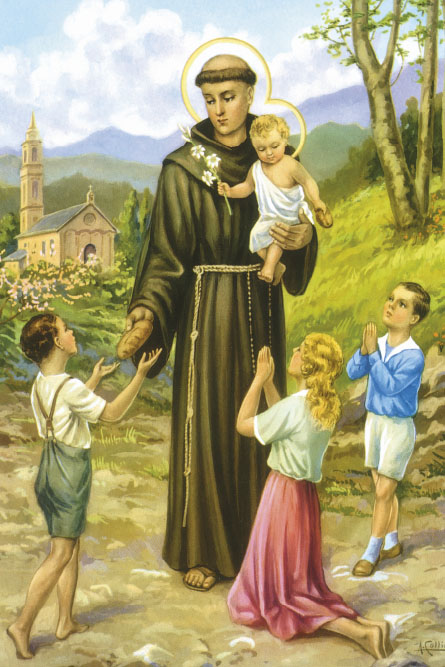

„Hoće li tko za mnom, neka se odreče samoga sebe, neka uzme svoj križ i neka ide za mnom.” (Mt 16,24)

Sveti Antun Padovanski, rođen 1195. godine u Lisabonu kao plemić Ferdinand, započeo je svoj duhovni put kod augustinaca, no potaknut primjerom prvih franjevačkih mučenika, pridružuje se redu svetog Franje. Iako ga je Franjo isprva smatrao skromno nadarenim i dodijelio mu posao u kuhinji, Antunova čudesna vještina propovijedanja ubrzo je izašla na vidjelo. Postao je jedan od najutjecajnijih propovjednika i teologa svog vremena, poučavajući na prestižnim sveučilištima u Bologni, Montpellieru i Padovi, gdje je i preminuo u dobi od samo 36 godina.
Njegov život prate brojne legende koje svjedoče o snazi njegove vjere, poput one o propovijedi ribama koje su ga pobožno slušale ili o magarcu koji je kleknuo pred Presvetom euharistijom kako bi se opovrglo krivovjerje. U ikonografiji se najčešće prikazuje u franjevačkom habitu s ljiljanom, simbolom čistoće, ili s Djetetom Isusom u naručju, što potječe iz viđenja koje je zabilježio jedan od njegovih domaćina.
Danas se sveti Antun štuje kao "svetac svega svijeta" i jedan je od najomiljenijih katoličkih svetaca. Zaštitnik je Padove, siromaha i putnika, a vjernici mu se diljem svijeta tradicionalno obraćaju za pomoć pri pronalaženju izgubljenih stvari. Nad njegovim grobom u Padovi podignuta je veličanstvena bazilika koja je i danas jedno od najvažnijih hodočasničkih mjesta u kršćanskom svijetu.